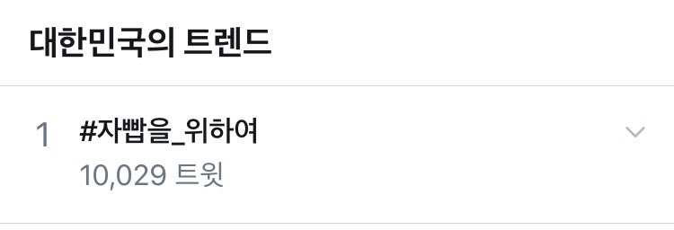

|  |
| 5월 13일 05시 한국 실시간 트렌드 캡처. |
2020년 5월 12일부터 13일 새벽까지 총공이 이어진 해시태그. 당일 새벽 5시 1만여 트윗을 찍고 총공이 끝난 후에도 종종 사용된다.
여성 크리에이터들을 향한 과도한 비난과 불필요한 검열을 경계하고, 지지함을 알리는 의미에서 시작된 해시태그 총공.
2020년 5월 12일-13일 스트리밍 중 최근 팬카페 등 공개된 공간이 아닌 개인적인 의사소통공간에서 반복적으로 피드백이 진행되고 있음이 알려졌고, 사태가 진행되며 해당 피드백이 동물의숲을 해서 구독을 취소하겠다는 등 검열로 작동하였음이 밝혀졌다. 이에 자빱을 응원하고 연대함을 밝히는 의미로 해당 해시태그의 사용이 제안되었다.